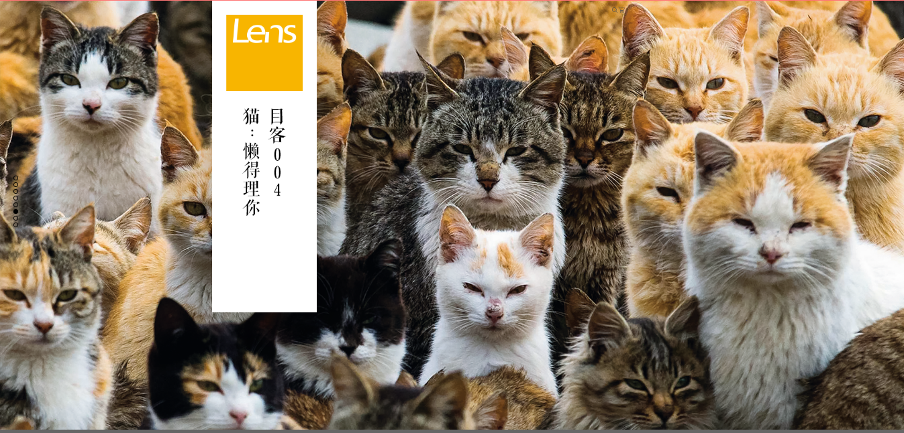

 图： 猫：懒得理你 （Lens：目客 004） Lens 于 2005 年由法满先生创办。 自 2005 年 2014 年， Lens 以月刊的出版周期与中国大陆的读者见面，被公认为中国最具口碑和份量的人文杂志。 自创始起，Lens一直秉承着“发现创造与美、探求生活价值、传递人性温暖”的价值观。 在内容上，首先提出了“影像阅读”的概念，即将高质量的图片与文字相结合， 共同讲述关于艺术、文化、社会、人物、历史和人性的故事。旗下包括《视觉》杂志书系和《目客》主题书系。 《视觉》深度关注现实与人性。定义影像之美，以多元视角介绍世界文化精粹和生活方式；双月出版。 《目客》专注于人文艺术和生活美学，营造有温度、有深度的影像生活读物；每一本目客书，聚焦于单一话题。 |｡･･)っ 推荐理由： ▶对于《Lens》的感觉就是『这是一本很有质感的书』。通过《Lens》可以看向这个世界不同的地方， 可以读到很多神秘有趣的故事。这些故事或照片甚至让人有种共通的感觉。 喜欢摄影、看老照片、听故事的朋友可以关注下《Lens》。 从创办之初到『文景』再到转型后的『视觉』『目客』， 《Lens》已经历了12年的蜕变，虽然有过停刊，从原先较为深度的社会观察到现在比较艺术的讲述风格， 但认真做杂志的态度始终如一。
Lens官网：http://www.welens.cn/
《忘记亲一下》由现代出版社出版，作者几米。书中以充满童趣且绵长深厚的故事，也是个看似简单轻快，却是几米透过灵动多样的想像力，以简御繁、以轻拨重的深刻创作，表达出创作者对于环境、土地，以及生命的最真切关怀。
故事中，小男孩“小树”和布丁狗搭乘一辆无人电车，在“电车叮当叮当”的车程中，慢慢想起父母亲消失，许多曾经的美好也消失了，所幸旅途中遇到的大树、稻田和猫头鹰鼓励他好好长大，当到站后，小树留下代表回忆的箱子，决定坚强面对人生。
more information...《奇迹》是日本著名导演是枝裕和、当代小说家中村航所著的小说，原本这只是两人合作完成的电影剧本，是为日本九州新干线全面开通而拍摄的“命题”电影，长大成人的你，还相信奇迹吗？
因为父母离婚而被迫分居鹿儿岛和福冈两地的兄弟：航一和龙之介。航一怀抱着一家再次团圆的愿望，听到了某个传闻：新开通的新干线，首发列车交汇瞬间就像流星，对着这个瞬间许愿就会发生奇迹！于是，怀着一家四口重新团聚的愿望，兄弟二人克服各种困难，带着各自的朋友，踏上了见证奇迹的冒险之旅。我们都在用各自的方式拒绝乏味的人生，所有的坚持都会成为奇迹！
more information...《亲爱的阿基米德》是一本2016年3月由宁夏人民出版社出版的推理言情小说，作者是玖月晞。《亲爱的阿基米德》曾在晋江文学城连载，网络反响十分好。
《亲爱的阿基米德》属于玖月晞“亲爱的”系列，本次出版全新修订完美大结局+多篇独家番外。
more information...